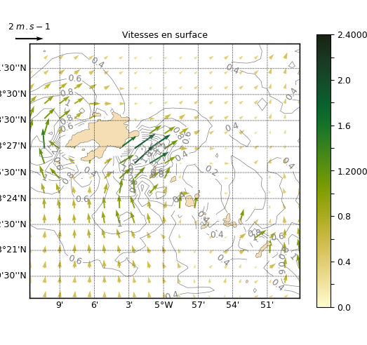

1.3.3.5.2.2. Tracé de vecteurs sur carte¶
Voir : map().

Un tracé de vecteurs vitesse sur une carte.
Le module des vecteurs est automatiquement tracé en fond mais
peut être désactivé avec nofill=True,contour=False.
Il est aussi possible de tracer un autre champ
en fond avec par exemple map((u,v,sst))
# %% Imports
import cdms2
from vacumm.config import data_sample
from vacumm.misc.plot import map2
import pylab as P ; P.rc('font', size=9)
# %% Read and mask zeros
zoom = dict(lat=(48.3, 48.55), lon=(-5.2, -4.8))
f = cdms2.open(data_sample('mars3d.xy.nc'))
u = f('u', **zoom)
v = f('v', **zoom)
f.close()
for var in u, v:
var[:] = cdms2.MV.masked_object(var, 0., copy=0)
# %% Plot
map2((u, v), title='Vitesses en surface', show=True,
units='$m s^{-1}$', figsize=(6, 5.), linewidth=.5,
quiver_alpha=1, quiver_samp=2, contour_colors='.5',
clabel=True,
quiver_units='dots', quiver_width=2,
quiver_scale_units='dots', quiver_scale=2./40.,
quiverkey_value=2., nofill=True,
left=.08, right=1., top=.9, proj='merc', quiver_norm=3,
savefigs=__file__, savefigs_pdf=True, close=True)